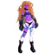

Independent artist & storyteller
Illustration with a little magic in the details.
I'm Hearin. I draw expressive characters, imagined worlds, and fantasy-inspired scenes, with a particular love for the storytelling found in tabletop and collectible card art.
Character art ✦ Fantasy illustration ✦ Visual storytelling
 Featured work / Fantasy concepts
Featured work / Fantasy concepts
Thoughtful characters. Playful worlds. Art that tells a story.
01 / Selected workThe portfolio
A few things I've made.
From familiar characters reimagined through fantasy to original creatures and everyday sketches.

Fantasy & card-game concepts
Story-driven, Lorcana-inspired fan artwork and game mat concepts.

Original characters
Personal worlds, memorable faces, and character stories.
.jpg)
Art Fight
Illustrations made for the annual art challenge.

The sketchbook
Loose ideas, experiments, and the process behind the work.

More artwork
Different mediums, moods, and ideas worth exploring.

A closer look
Every illustration begins with a story.
One of my favorite exercises is taking a character we know and imagining who they might become in a different world. My fantasy game mat series explores that idea through character, atmosphere, and a little adventure.
See the fantasy collectionPersonal fan concepts. Not affiliated with or endorsed by Disney Lorcana or Ravensburger.
Beyond illustration
Always making something.
Let's make something
Have a project in mind?
I'm interested in illustration opportunities, character-driven projects, and creative collaborations. I'd love to hear what you're imagining.
Email Hearin